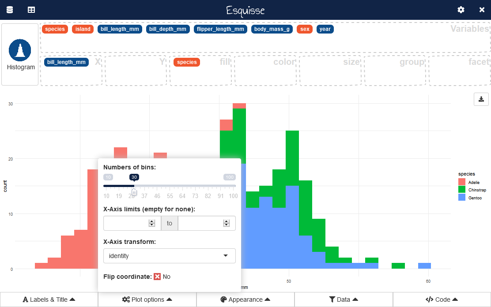

Launch the addin
In RStudio, you can use the Addins menu :

Or in the R console :
To use a data.frame by default, if using the Addins menu highlight with the cursor a data.frame in source editor before launching addin. Otherwise, pass the data.frame as first argument to the function :
esquisser(mtcars)Import data into {esquisse}
If you don’t have used a data.frame when launching the addin, a window to import data will appear.
This feature comes from package {datamods}, you can find more documentation about it here.

Create a plot
This is the main interface and the most interesting part of the addin (in example below, we use penguins dataset from {palmerpenguins}) :

You can select aesthetics to used by clicking the gear icon in top right corner, then drag-and-drop into aesthetics boxes to create a plot:

A geometry is automatically picked to represent the data, according to data type. You can select an other geom with button in top right corner :

Controls
Five menus under plot area are available to set plot parameters, filter data and retrieve code to generate the plot.
Labels & titles
This menu allow to set plot’s title, subtitle, caption, axis and aesthetics labels :

Plot options
Here you can modify plot parameters, options available in the menu depends on type of plot :

Filter
Widgets to interactively filter data used in plot :

The filter module is available in package {datamods}.
The code used to filter the data will be available in the following menu.
Export
You can save the plot created in various format by clicking the button in plot area’s top-right corner:

With “More options”, you can access a new window with more parameters to export the plot:

Addin options
By default, esquisse is launched into a dialog window (if in RStudio), you can choose to use your browser if you prefer, or the Viewer pane.
You can set display mode with an option (in .Rprofile for example) :
options("esquisse.viewer" = "browser")Internationalization
Currently you can use {esquisse} in the following language:  english (default),
english (default),  french (
french ("fr"),  macedonian (
macedonian ("mk"),  albanian (
albanian ("sq"). Activate with:
If you want another language to be supported, you can submit a Pull Request to add a CSV file like the one used for french (file is located in inst/i18n folder in the package, you can see it here on GitHub).
See {datamods} vignette for more on this topic.